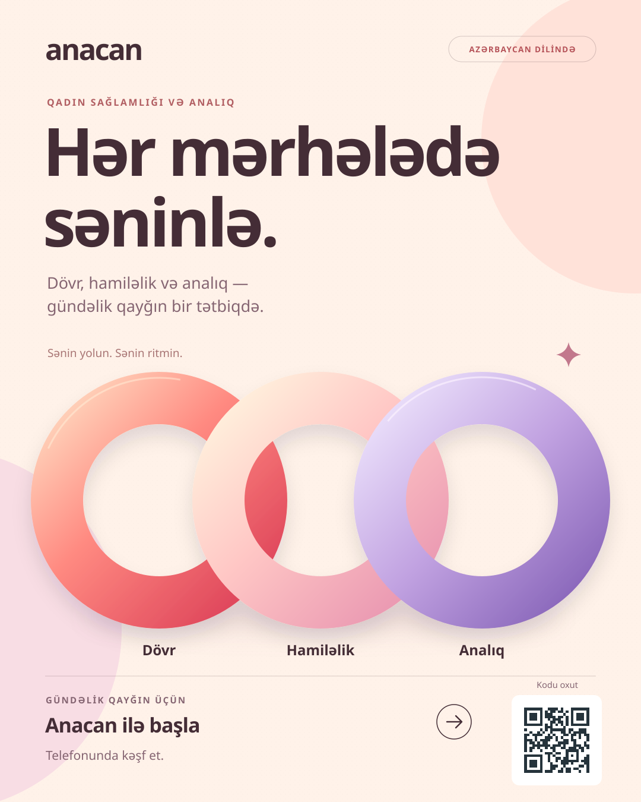
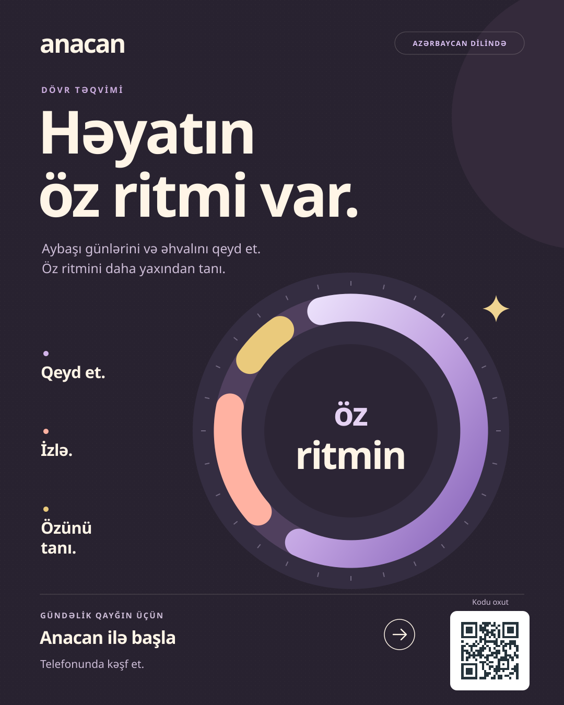
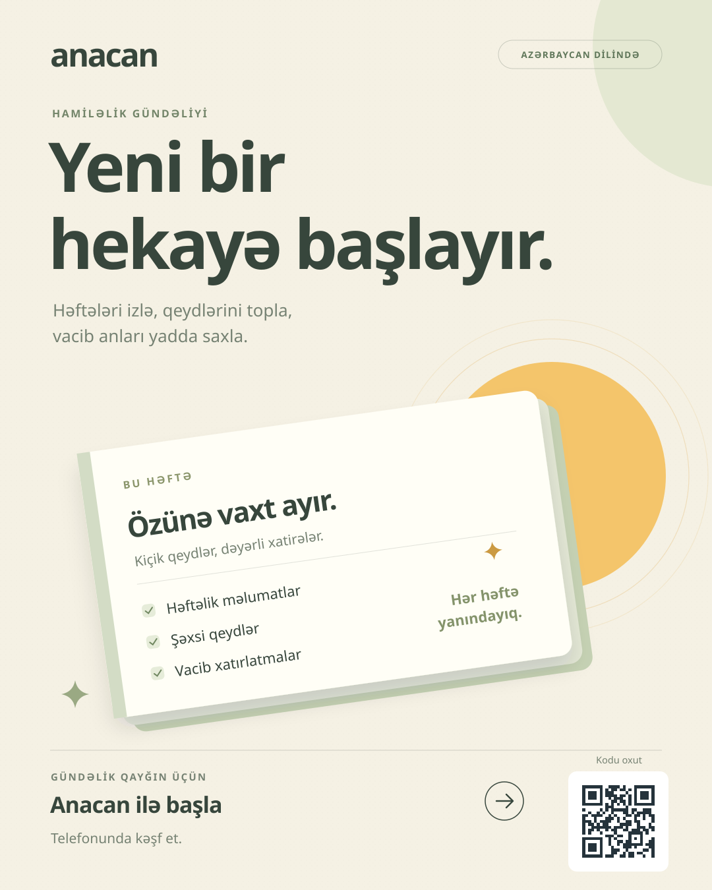
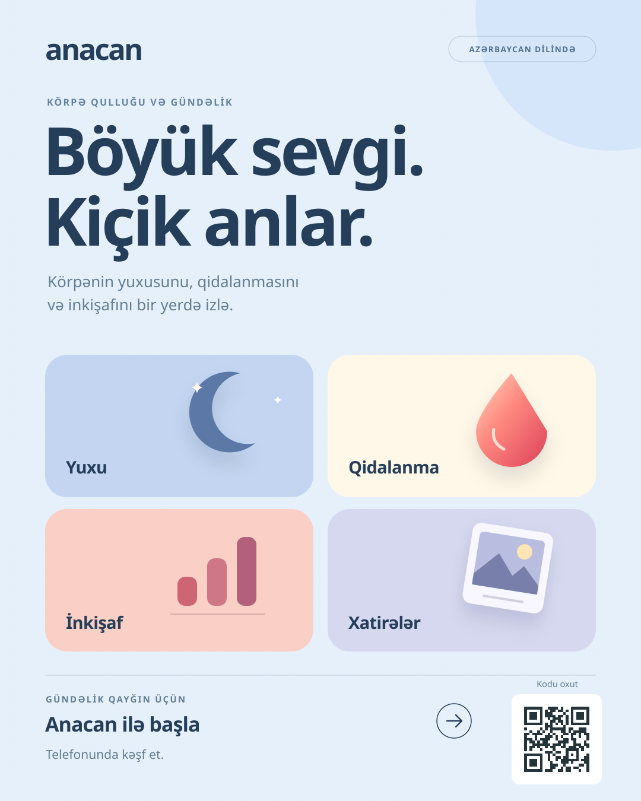
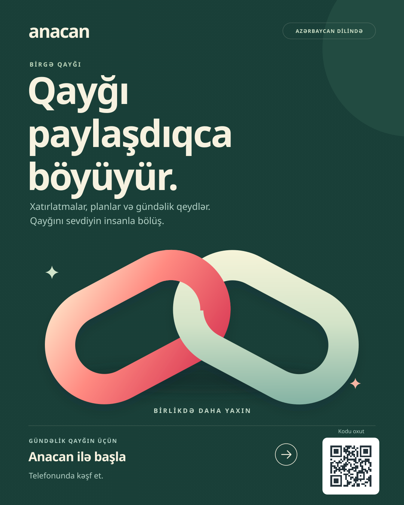
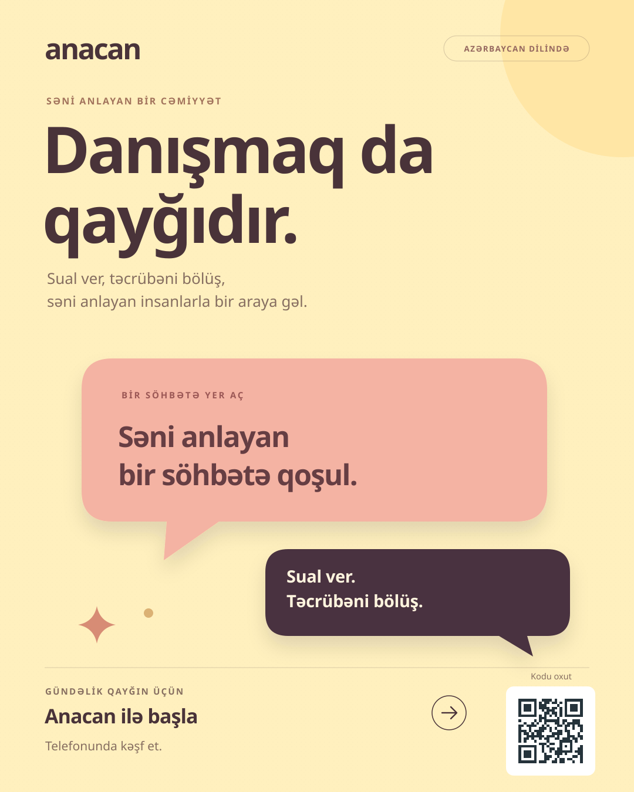

Anacan — yeni flayerlər
Altı fərqli görünüş. Tam Azərbaycan dilində.
Abstrakt formalar, aydın mətn və personajsız dizayn.

01 · Hər mərhələdə səninlə
İsti mərcan tonları və birləşən halqalar

02 · Həyatın öz ritmi var
Tünd gavalı rəngi və zərif ritm dairəsi

03 · Yeni bir hekayə başlayır
Kağız qatları, adaçayı və günəş tonları

04 · Böyük sevgi. Kiçik anlar
Səma rəngləri və yumşaq həndəsi formalar

05 · Qayğı paylaşdıqca böyüyür
Dərin yaşıl fon və birləşən lentlər

06 · Danışmaq da qayğıdır
İsti sarı fon və rəngli söhbət formaları